library(nycflights13)
library(tidyverse)W#04: Relational Data, Math: Sets and Functions, Programming Functions
0.1 Preliminaries
In this lectures we will use these packages.
The datasets used can be downloaded from:
https://github.com/CU-F25-MDSSB-01-Concepts-Tools/Website/tree/main/lectures
1 Strings and Special Values
1.1 String modification
We modify strings with the stringr package from the tidyverse core. All functions from stringr start with str_.
Very few examples:
c("x", "y")[1] "x" "y"str_c("x", "y")[1] "xy". . .
str_c("x", "y", "z", sep = ",")[1] "x,y,z". . .
length(c("x", "y", "z"))[1] 3str_length(c("x", "y", "z"))[1] 1 1 1str_length(c("This is a string.", "z"))[1] 17 11.2 String wrangling with variable names
This is a typical use case. We have data like this:
data <- tibble(
Name = c("A", "B", "C"),
Age_2020 = c(20, 30, 40),
Age_2021 = c(21, 31, 41),
Age_2022 = c(22, 32, 42)
)
data# A tibble: 3 × 4
Name Age_2020 Age_2021 Age_2022
<chr> <dbl> <dbl> <dbl>
1 A 20 21 22
2 B 30 31 32
3 C 40 41 42We tidy that data set by creating a year variable.
. . .
data |>
pivot_longer(
c("Age_2020", "Age_2021", "Age_2022"),
names_to = "Year",
values_to = "Age"
)# A tibble: 9 × 3
Name Year Age
<chr> <chr> <dbl>
1 A Age_2020 20
2 A Age_2021 21
3 A Age_2022 22
4 B Age_2020 30
5 B Age_2021 31
6 B Age_2022 32
7 C Age_2020 40
8 C Age_2021 41
9 C Age_2022 42. . .
OK, but the year variable is a string but we want numbers.
1.3 Use word
word extracts words from a sentence.
- You can specify the words from
starttoend. Use numbers or negative numbers to count from the last word. - The word separator need not be
" "but can be any character.
word("This is a string.", start = 2, end = -2)[1] "is a"word("Age_2022", start = 2, sep = "_")[1] "2022". . .
It also works vectorized.
data |>
pivot_longer(
c("Age_2020", "Age_2021", "Age_2022"),
names_to = "Year",
values_to = "Age"
) |>
mutate(
Year = word(Year, start = 2, sep = "_") |>
as.numeric()
)# A tibble: 9 × 3
Name Year Age
<chr> <dbl> <dbl>
1 A 2020 20
2 A 2021 21
3 A 2022 22
4 B 2020 30
5 B 2021 31
6 B 2022 32
7 C 2020 40
8 C 2021 41
9 C 2022 421.4 String Detection / Regular Expressions
Many stringr function follow the structure (string, pattern).
string is in our data, pattern is a string interpreted as a Regular Expression
A few examples show its power:
fruits <- c("apple", "pineapple", "Pear", "orange", "peach", "banana")str_detect(fruits, "apple")[1] TRUE TRUE FALSE FALSE FALSE FALSEstr_extract(fruits, "apple")[1] "apple" "apple" NA NA NA NA str_extract(fruits, "[Pp][a-z]")[1] "pp" "pi" "Pe" NA "pe" NA str_extract(fruits, "^[Pp][a-z]")[1] NA "pi" "Pe" NA "pe" NA str_extract(fruits, "^[Pp][a-z]{3}")[1] NA "pine" "Pear" NA "peac" NA str_extract(fruits, "^[Pp][a-z]+")[1] NA "pineapple" "Pear" NA "peach" NA Test other words, like str_extract("Pizza Napoli","^[Pp][a-z]+"):
1.5 Regular Expressions
Regular expressions (regexp or regex): Character-Sequences specifying match patterns.
Useful when strings contain unstructured or semi-structured data.
When you first look at a regexp, you’ll think a cat walked across your keyboard, but as your understanding improves they will start to make sense. (Or you ask an AI chatbot to give you what you need 🙂)
Guess what this regexp’s are to match?
"^[a-zA-Z0-9_.+-]+@[a-zA-Z0-9-]+\\.[a-zA-Z0-9-.]+$"
"^[\\w-\\.]+@([\\w-]+\\.)+[\\w-]{2,4}$"
"^[[:alnum:].-_]+@[[:alnum:].-]+$"
. . .
Email addresses! However, this is not the perfect solution. Dig deeper: Read the discussion and see the example in How can I validate an email address using a regular expression? at stackoverflow.
2 Special Values for “no data”
2.1 Special values
You should know the differences of special values.
NA: Not available (string, number, or whatever vector entry)NULL: Null object, the undefined object, e.g. an empty list or an empty list elementNaN: For numbers: Meaning “Not a Number” (when math cannot solve what you want)Inf: For numbers: Positive infinity-Inf: For numbers: Negative infinity
Check some math:
1 / 0[1] Inf-1 / 0[1] -Inf0 / 0[1] NaN1 / 0 + 1 / 0[1] Inf1 / 0 - 1 / 0[1] NaN2.2 NAs
NaN is not a number, but NA stands for genuinely unknown values.
It can also be in a character of logical vector.
x = c(1, 2, 3, 4, NA)
mean(x)[1] NAmean(x, na.rm = TRUE)[1] 2.5summary(x) Min. 1st Qu. Median Mean 3rd Qu. Max. NAs
1.00 1.75 2.50 2.50 3.25 4.00 1 . . .
The type of NA is logical.
typeof(NA)[1] "logical"typeof(NaN)[1] "double"Does it make sense? Let us look at NA’s in logical operations.
2.3 NAs in logical operations
NA can be TRUE or FALSE.
Usually operations including NA results again in NA, but some not!
NA & TRUE[1] NANA | TRUE[1] TRUENA & FALSE[1] FALSENA | FALSE[1] NAUnderstanding logical operations is important!
2.4 NULL is the null object
- used to represent lists with zero length
x <- 1:10
attributes(x)NULL- used as a placeholder for missing values in lists and dataframes
L <- list(a = 1)
L[[3]] <- 5
L$a
[1] 1
[[2]]
NULL
[[3]]
[1] 53 Relational Data - Joining
3.1 Working with more dataframes
- Data can be distributed in several dataframes which have relations which each other.
- For example, they share variables as the five dataframes in
nycflights13.
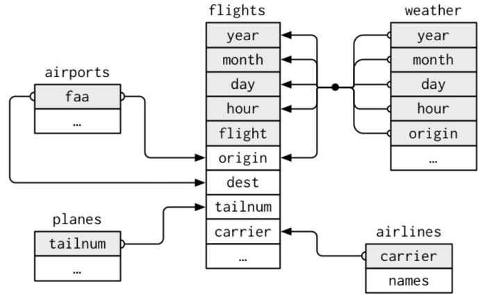
Often variables in different dataframe have the same name, but that need not be the case! See the variable faa in airports matches origin and dest in flights.
3.2 Data: Women in science
10 women in science who changed the world:
Ada Lovelace, Marie Curie, Janaki Ammal, Chien-Shiung Wu, Katherine Johnson, Rosalind Franklin, Vera Rubin, Gladys West, Flossie Wong-Staal, Jennifer Doudna
professions <- read_csv("professions.csv")Rows: 10 Columns: 2
── Column specification ────────────────────────────────────────────────────────
Delimiter: ","
chr (2): name, profession
ℹ Use `spec()` to retrieve the full column specification for this data.
ℹ Specify the column types or set `show_col_types = FALSE` to quiet this message.professions# A tibble: 10 × 2
name profession
<chr> <chr>
1 Ada Lovelace Mathematician
2 Marie Curie Physicist and Chemist
3 Janaki Ammal Botanist
4 Chien-Shiung Wu Physicist
5 Katherine Johnson Mathematician
6 Rosalind Franklin Chemist
7 Vera Rubin Astronomer
8 Gladys West Mathematician
9 Flossie Wong-Staal Virologist and Molecular Biologist
10 Jennifer Doudna Biochemist dates <- read_csv("dates.csv")Rows: 8 Columns: 3
── Column specification ────────────────────────────────────────────────────────
Delimiter: ","
chr (1): name
dbl (2): birth_year, death_year
ℹ Use `spec()` to retrieve the full column specification for this data.
ℹ Specify the column types or set `show_col_types = FALSE` to quiet this message.dates# A tibble: 8 × 3
name birth_year death_year
<chr> <dbl> <dbl>
1 Janaki Ammal 1897 1984
2 Chien-Shiung Wu 1912 1997
3 Katherine Johnson 1918 2020
4 Rosalind Franklin 1920 1958
5 Vera Rubin 1928 2016
6 Gladys West 1930 NA
7 Flossie Wong-Staal 1947 NA
8 Jennifer Doudna 1964 NAworks <- read_csv("works.csv")Rows: 9 Columns: 2
── Column specification ────────────────────────────────────────────────────────
Delimiter: ","
chr (2): name, known_for
ℹ Use `spec()` to retrieve the full column specification for this data.
ℹ Specify the column types or set `show_col_types = FALSE` to quiet this message.works# A tibble: 9 × 2
name known_for
<chr> <chr>
1 Ada Lovelace first computer algorithm
2 Marie Curie theory of radioactivity, discovery of elements polonium a…
3 Janaki Ammal hybrid species, biodiversity protection
4 Chien-Shiung Wu confim and refine theory of radioactive beta decy, Wu expe…
5 Katherine Johnson calculations of orbital mechanics critical to sending the …
6 Vera Rubin existence of dark matter
7 Gladys West mathematical modeling of the shape of the Earth which serv…
8 Flossie Wong-Staal first scientist to clone HIV and create a map of its genes…
9 Jennifer Doudna one of the primary developers of CRISPR, a ground-breaking…Source: Discover Magazine. The data can be downloaded: professions.csv, dates.csv, works.csv
3.3 We want this dataframe
professions |> left_join(dates) |> left_join(works)Joining with `by = join_by(name)`
Joining with `by = join_by(name)`# A tibble: 10 × 5
name profession birth_year death_year known_for
<chr> <chr> <dbl> <dbl> <chr>
1 Ada Lovelace Mathematician NA NA first co…
2 Marie Curie Physicist and Chemist NA NA theory o…
3 Janaki Ammal Botanist 1897 1984 hybrid s…
4 Chien-Shiung Wu Physicist 1912 1997 confim a…
5 Katherine Johnson Mathematician 1918 2020 calculat…
6 Rosalind Franklin Chemist 1920 1958 <NA>
7 Vera Rubin Astronomer 1928 2016 existenc…
8 Gladys West Mathematician 1930 NA mathemat…
9 Flossie Wong-Staal Virologist and Molecular … 1947 NA first sc…
10 Jennifer Doudna Biochemist 1964 NA one of t…3.4 Joining dataframes
something_join(x, y)1 for dataframes x and y which have a relation
left_join(): all rows from x must remainright_join(): all rows from y must remainfull_join(): all rows from both x and y must remaininner_join(): all rows from x where there are matching values in y remain- … (more exist see
dplyrcheatsheet)
3.5 Simple setup for x and y
x <- tibble(
id = c(1, 2, 3),
value_x = c("x1", "x2", "x3")
)
y <- tibble(
id = c(1, 2, 4),
value_y = c("y1", "y2", "y4")
)
x# A tibble: 3 × 2
id value_x
<dbl> <chr>
1 1 x1
2 2 x2
3 3 x3 y# A tibble: 3 × 2
id value_y
<dbl> <chr>
1 1 y1
2 2 y2
3 4 y4 3.6 left_join()

left_join(x, y)Joining with `by = join_by(id)`# A tibble: 3 × 3
id value_x value_y
<dbl> <chr> <chr>
1 1 x1 y1
2 2 x2 y2
3 3 x3 <NA> 3.7 right_join()

right_join(x, y)Joining with `by = join_by(id)`# A tibble: 3 × 3
id value_x value_y
<dbl> <chr> <chr>
1 1 x1 y1
2 2 x2 y2
3 4 <NA> y4 3.8 full_join()

full_join(x, y)Joining with `by = join_by(id)`# A tibble: 4 × 3
id value_x value_y
<dbl> <chr> <chr>
1 1 x1 y1
2 2 x2 y2
3 3 x3 <NA>
4 4 <NA> y4 3.9 inner_join()

inner_join(x, y)Joining with `by = join_by(id)`# A tibble: 2 × 3
id value_x value_y
<dbl> <chr> <chr>
1 1 x1 y1
2 2 x2 y2 3.10 Women in science
professions |> left_join(works)Joining with `by = join_by(name)`# A tibble: 10 × 3
name profession known_for
<chr> <chr> <chr>
1 Ada Lovelace Mathematician first computer algorit…
2 Marie Curie Physicist and Chemist theory of radioactivit…
3 Janaki Ammal Botanist hybrid species, biodiv…
4 Chien-Shiung Wu Physicist confim and refine theo…
5 Katherine Johnson Mathematician calculations of orbita…
6 Rosalind Franklin Chemist <NA>
7 Vera Rubin Astronomer existence of dark matt…
8 Gladys West Mathematician mathematical modeling …
9 Flossie Wong-Staal Virologist and Molecular Biologist first scientist to clo…
10 Jennifer Doudna Biochemist one of the primary dev…professions |> right_join(works)Joining with `by = join_by(name)`# A tibble: 9 × 3
name profession known_for
<chr> <chr> <chr>
1 Ada Lovelace Mathematician first computer algorithm
2 Marie Curie Physicist and Chemist theory of radioactivity…
3 Janaki Ammal Botanist hybrid species, biodive…
4 Chien-Shiung Wu Physicist confim and refine theor…
5 Katherine Johnson Mathematician calculations of orbital…
6 Vera Rubin Astronomer existence of dark matter
7 Gladys West Mathematician mathematical modeling o…
8 Flossie Wong-Staal Virologist and Molecular Biologist first scientist to clon…
9 Jennifer Doudna Biochemist one of the primary deve…dates |> full_join(works)Joining with `by = join_by(name)`# A tibble: 10 × 4
name birth_year death_year known_for
<chr> <dbl> <dbl> <chr>
1 Janaki Ammal 1897 1984 hybrid species, biodiversity protec…
2 Chien-Shiung Wu 1912 1997 confim and refine theory of radioac…
3 Katherine Johnson 1918 2020 calculations of orbital mechanics c…
4 Rosalind Franklin 1920 1958 <NA>
5 Vera Rubin 1928 2016 existence of dark matter
6 Gladys West 1930 NA mathematical modeling of the shape …
7 Flossie Wong-Staal 1947 NA first scientist to clone HIV and cr…
8 Jennifer Doudna 1964 NA one of the primary developers of CR…
9 Ada Lovelace NA NA first computer algorithm
10 Marie Curie NA NA theory of radioactivity, discovery…dates |> inner_join(works)Joining with `by = join_by(name)`# A tibble: 7 × 4
name birth_year death_year known_for
<chr> <dbl> <dbl> <chr>
1 Janaki Ammal 1897 1984 hybrid species, biodiversity protect…
2 Chien-Shiung Wu 1912 1997 confim and refine theory of radioact…
3 Katherine Johnson 1918 2020 calculations of orbital mechanics cr…
4 Vera Rubin 1928 2016 existence of dark matter
5 Gladys West 1930 NA mathematical modeling of the shape o…
6 Flossie Wong-Staal 1947 NA first scientist to clone HIV and cre…
7 Jennifer Doudna 1964 NA one of the primary developers of CRI…professions |> left_join(dates) |> left_join(works)Joining with `by = join_by(name)`
Joining with `by = join_by(name)`# A tibble: 10 × 5
name profession birth_year death_year known_for
<chr> <chr> <dbl> <dbl> <chr>
1 Ada Lovelace Mathematician NA NA first co…
2 Marie Curie Physicist and Chemist NA NA theory o…
3 Janaki Ammal Botanist 1897 1984 hybrid s…
4 Chien-Shiung Wu Physicist 1912 1997 confim a…
5 Katherine Johnson Mathematician 1918 2020 calculat…
6 Rosalind Franklin Chemist 1920 1958 <NA>
7 Vera Rubin Astronomer 1928 2016 existenc…
8 Gladys West Mathematician 1930 NA mathemat…
9 Flossie Wong-Staal Virologist and Molecular … 1947 NA first sc…
10 Jennifer Doudna Biochemist 1964 NA one of t…3.11 Keys
- A key is a variable or a set of variables which uniquely identifies observations
- What was the key in the dataframe of women in science?
name
. . .
Switching back to nycflights13 as example
- In simple cases, a single variable is sufficient to identify an observation, e.g. each plane in
planesis identified bytailnum. - Sometimes, multiple variables are needed; e.g. to identify an observation in
weatheryou need five variables:year,month,day,hour, andorigin
3.12 How to check if a variable is a key?
Counting observation and filter those more than one
library(nycflights13)
planes |> count(tailnum) |> filter(n > 1)# A tibble: 0 × 2
# ℹ 2 variables: tailnum <chr>, n <int>weather |> count(year, month, day, hour, origin) |> filter(n > 1)# A tibble: 3 × 6
year month day hour origin n
<int> <int> <int> <int> <chr> <int>
1 2013 11 3 1 EWR 2
2 2013 11 3 1 JFK 2
3 2013 11 3 1 LGA 2OK, here 3 observations are twice, one for each airport. Probably this is related to Daylight saving time in the US. In Fall clocks are turned back 1 hour. So this hour appears twice.
. . .
Example: Without hour it is not a key
weather |> count(year, month, day, origin) |> filter(n > 1)# A tibble: 1,092 × 5
year month day origin n
<int> <int> <int> <chr> <int>
1 2013 1 1 EWR 22
2 2013 1 1 JFK 22
3 2013 1 1 LGA 23
4 2013 1 2 EWR 24
5 2013 1 2 JFK 24
6 2013 1 2 LGA 24
7 2013 1 3 EWR 24
8 2013 1 3 JFK 24
9 2013 1 3 LGA 24
10 2013 1 4 EWR 24
# ℹ 1,082 more rowsWhy do we have only 22 and 23 on day 1 of month 1? No idea. Dig deeper yourself!
3.13 Primary and foreign keys
A primary key uniquely identifies an observation in its own table. E.g,
planes$tailnuminplanes.A foreign key uniquely identifies an observation in another dataframe E.g.
flights$tailnumis a foreign key inflightsbecause it matches each flight to a unique plane inplanes.A primary key and a foreign key form a relation.
- Often a 1-to-many relation. Each plane has many flights.
- Implication: Joining
flightswithplanesduplicates the rows ofplanesfor each flight of that plane.
- Implication: Joining
- Often a 1-to-many relation. Each plane has many flights.
Relations can also be many-to-many. Airlines can fly to many airports; airport can host many airplanes.
3.14 Joining when key names differ?
We have to specify the key relation with a named vector in the by argument.
dim(flights)[1] 336776 19flights |> left_join(airports, by = c("dest" = "faa"))# A tibble: 336,776 × 26
year month day dep_time sched_dep_time dep_delay arr_time sched_arr_time
<int> <int> <int> <int> <int> <dbl> <int> <int>
1 2013 1 1 517 515 2 830 819
2 2013 1 1 533 529 4 850 830
3 2013 1 1 542 540 2 923 850
4 2013 1 1 544 545 -1 1004 1022
5 2013 1 1 554 600 -6 812 837
6 2013 1 1 554 558 -4 740 728
7 2013 1 1 555 600 -5 913 854
8 2013 1 1 557 600 -3 709 723
9 2013 1 1 557 600 -3 838 846
10 2013 1 1 558 600 -2 753 745
# ℹ 336,766 more rows
# ℹ 18 more variables: arr_delay <dbl>, carrier <chr>, flight <int>,
# tailnum <chr>, origin <chr>, dest <chr>, air_time <dbl>, distance <dbl>,
# hour <dbl>, minute <dbl>, time_hour <dttm>, name <chr>, lat <dbl>,
# lon <dbl>, alt <dbl>, tz <dbl>, dst <chr>, tzone <chr>The alternative (new default) version is to use the join_by function using the comparison sign ==.
flights |> left_join(airports, join_by("dest" == "faa"))# A tibble: 336,776 × 26
year month day dep_time sched_dep_time dep_delay arr_time sched_arr_time
<int> <int> <int> <int> <int> <dbl> <int> <int>
1 2013 1 1 517 515 2 830 819
2 2013 1 1 533 529 4 850 830
3 2013 1 1 542 540 2 923 850
4 2013 1 1 544 545 -1 1004 1022
5 2013 1 1 554 600 -6 812 837
6 2013 1 1 554 558 -4 740 728
7 2013 1 1 555 600 -5 913 854
8 2013 1 1 557 600 -3 709 723
9 2013 1 1 557 600 -3 838 846
10 2013 1 1 558 600 -2 753 745
# ℹ 336,766 more rows
# ℹ 18 more variables: arr_delay <dbl>, carrier <chr>, flight <int>,
# tailnum <chr>, origin <chr>, dest <chr>, air_time <dbl>, distance <dbl>,
# hour <dbl>, minute <dbl>, time_hour <dttm>, name <chr>, lat <dbl>,
# lon <dbl>, alt <dbl>, tz <dbl>, dst <chr>, tzone <chr>Why does the number of rows stays the same after joining?
. . .
faa is a primary key in airports. It is matched with dest as the foreign key in flights.
3.15 left_join is essentially right_join with switched dataframes
airports_right_flights <- airports |>
right_join(flights, by = c("faa" = "dest"))
airports_right_flights# A tibble: 336,776 × 26
faa name lat lon alt tz dst tzone year month day dep_time
<chr> <chr> <dbl> <dbl> <dbl> <dbl> <chr> <chr> <int> <int> <int> <int>
1 ABQ Albuque… 35.0 -107. 5355 -7 A Amer… 2013 10 1 1955
2 ABQ Albuque… 35.0 -107. 5355 -7 A Amer… 2013 10 2 2010
3 ABQ Albuque… 35.0 -107. 5355 -7 A Amer… 2013 10 3 1955
4 ABQ Albuque… 35.0 -107. 5355 -7 A Amer… 2013 10 4 2017
5 ABQ Albuque… 35.0 -107. 5355 -7 A Amer… 2013 10 5 1959
6 ABQ Albuque… 35.0 -107. 5355 -7 A Amer… 2013 10 6 1959
7 ABQ Albuque… 35.0 -107. 5355 -7 A Amer… 2013 10 7 2002
8 ABQ Albuque… 35.0 -107. 5355 -7 A Amer… 2013 10 8 1957
9 ABQ Albuque… 35.0 -107. 5355 -7 A Amer… 2013 10 9 1957
10 ABQ Albuque… 35.0 -107. 5355 -7 A Amer… 2013 10 10 2011
# ℹ 336,766 more rows
# ℹ 14 more variables: sched_dep_time <int>, dep_delay <dbl>, arr_time <int>,
# sched_arr_time <int>, arr_delay <dbl>, carrier <chr>, flight <int>,
# tailnum <chr>, origin <chr>, air_time <dbl>, distance <dbl>, hour <dbl>,
# minute <dbl>, time_hour <dttm>Differences
- In a join where keys have different column names the name of the first dataframe survives (unless you use
keep = TRUE). Here,faasurvived instead ofdest - The columns from the first dataframe come first
- The order of rows is taken from the first dataframe, while duplication and dropping of variables is determined by the second dataframe (because it is a
right_join)
Using the fact that flights seem to be ordered by year, month, day, dep_time we can re-arrange:
airports_right_flights |>
rename(dest = faa) |>
select(names(flights)) |> # Use order of flights
arrange(year, month, day, dep_time)# A tibble: 336,776 × 19
year month day dep_time sched_dep_time dep_delay arr_time sched_arr_time
<int> <int> <int> <int> <int> <dbl> <int> <int>
1 2013 1 1 517 515 2 830 819
2 2013 1 1 533 529 4 850 830
3 2013 1 1 542 540 2 923 850
4 2013 1 1 544 545 -1 1004 1022
5 2013 1 1 554 600 -6 812 837
6 2013 1 1 554 558 -4 740 728
7 2013 1 1 555 600 -5 913 854
8 2013 1 1 557 600 -3 709 723
9 2013 1 1 557 600 -3 838 846
10 2013 1 1 558 600 -2 924 917
# ℹ 336,766 more rows
# ℹ 11 more variables: arr_delay <dbl>, carrier <chr>, flight <int>,
# tailnum <chr>, origin <chr>, dest <chr>, air_time <dbl>, distance <dbl>,
# hour <dbl>, minute <dbl>, time_hour <dttm>Note of caution: A deeper analysis shows that the order is still not exactly the same.
3.16 left_join with reversed dataframes
Let us do this test to understand joins better
dim(airports)[1] 1458 8dim(flights)[1] 336776 19airports |>
left_join(flights, by = c("faa" = "dest"))# A tibble: 330,531 × 26
faa name lat lon alt tz dst tzone year month day dep_time
<chr> <chr> <dbl> <dbl> <dbl> <dbl> <chr> <chr> <int> <int> <int> <int>
1 04G Lansdo… 41.1 -80.6 1044 -5 A Amer… NA NA NA NA
2 06A Moton … 32.5 -85.7 264 -6 A Amer… NA NA NA NA
3 06C Schaum… 42.0 -88.1 801 -6 A Amer… NA NA NA NA
4 06N Randal… 41.4 -74.4 523 -5 A Amer… NA NA NA NA
5 09J Jekyll… 31.1 -81.4 11 -5 A Amer… NA NA NA NA
6 0A9 Elizab… 36.4 -82.2 1593 -5 A Amer… NA NA NA NA
7 0G6 Willia… 41.5 -84.5 730 -5 A Amer… NA NA NA NA
8 0G7 Finger… 42.9 -76.8 492 -5 A Amer… NA NA NA NA
9 0P2 Shoest… 39.8 -76.6 1000 -5 U Amer… NA NA NA NA
10 0S9 Jeffer… 48.1 -123. 108 -8 A Amer… NA NA NA NA
# ℹ 330,521 more rows
# ℹ 14 more variables: sched_dep_time <int>, dep_delay <dbl>, arr_time <int>,
# sched_arr_time <int>, arr_delay <dbl>, carrier <chr>, flight <int>,
# tailnum <chr>, origin <chr>, air_time <dbl>, distance <dbl>, hour <dbl>,
# minute <dbl>, time_hour <dttm>We have much more rows in than in airports. However, we have less rows than when we flight |> left_join(airports). Why?
Why does the number of rows changes after joining?
. . .
dest is not a primary key in flights. There are more flights with the same destination so rows of airports get duplicated.
Why is the number of rows then less than the number of rows in flights?
. . .
336776 flights and 330531 airports left joined by flights.
Let us do some checks:
length(unique(airports$faa)) # Unique turns out to be redundant because faa is a primary key[1] 1458length(unique(flights$dest))[1] 105There are much more airports then destinations in flights!
… but the rows of airports prevail when it is the first in a left_join.
So, the dataframe should even increase because we get several rows of airports without flights.
. . .
Let us dig deeper.
setdiff(unique(airports$faa), unique(flights$dest)) |> length()[1] 1357setdiff(unique(flights$dest), unique(airports$faa)) |> length()[1] 41,357 airports have no flights!
There are four destinations in flights, which are not in the airports list!
How many flights are to these?
flights |>
filter(dest %in% setdiff(unique(flights$dest), unique(airports$faa))) |>
nrow()[1] 76027,602 flights go to destinations not listed as airport
nrow(airports |> left_join(flights, by = c("faa" = "dest"))) ==
nrow(flights) + 1357 - 7602[1] TRUEOK, now we have a clear picture:
airport with left_joined flights duplicates the rows of airports for each flight flying to it. So the total number of rows is
- the number of flights
- plus the number of airport which do not appear as a destination
- minus the flights which go to destinations which are not listed in airports
Learning: The new number of observation after a join can be a complex combination of duplication and dropping.
It is your responsibility to understand what is happening!
4 Math: Sets and vectors
4.1 Definition: Sets and vectors
A set is mathematical model for the unordered collection of different things (elements).
Examples
- \(\{3, \text{Hi}, 😀, 🖖 \}\)
- \(\{1,3,5\}\)
- The natural numbers \(\mathbb{N} = \{1, 2, 3, \dots\}\) (infinite!)
- \(\{\mathtt{"EWR"}, \mathtt{"LGA"}, \mathtt{"JFK"}\}\)
these areoriginairports inflights
4.2 Math: Sets and vectors
A vector is an ordered collection of things (components) of the same type.
In a set, each thing can only be once and the order does not matter!
. . .
\(\{1,3,5\} = \{3,5,1\} = \{1,1,1,3,5,5\}\)
For vectors:
\([1\ 3\ 5] \neq [3\ 5\ 1]\) because we compare component-wise, so we cannot even compare with those with the vector \([1\ 1\ 1\ 3\ 5\ 5]\)
4.3 Math: Set operations
Sets \(A = \{🐺, 🦊, 🐶\}\) and \(B = \{🐶, 🐷, 🐹\}\), \(C = \{🐶, 🐷\}\):
- Set union \(A \cup B\) = {🐺, 🦊, 🐶, 🐷, 🐹}
\(x \in A \cup B\) when \(x \in A\)|(or) \(x\in B\) - Set intersection \(A \cap B\) = {🐶}
\(x \in A \cap B\) when \(x \in A\)&(and) \(x\in B\) - Set difference \(A \setminus B = \{🐺, 🦊\}\), \(B \setminus A\) = {🐷, 🐹}
- Subset: \(C \subset B\) but \(C \not\subset A\)
. . .
See the analogy of set operations and logical operations.
4.4 Set operations in R
unique shows the set of elements in a vector
unique(flights$origin)[1] "EWR" "LGA" "JFK". . .
setequal tests for set equality
setequal(c("EWR", "LGA", "JFK"), c("EWR", "EWR", "LGA", "JFK"))[1] TRUE. . .
union, intersect, setdiff treat vectors as sets and operate as expected
union(1:5, 3:7)[1] 1 2 3 4 5 6 7intersect(1:5, 3:7)[1] 3 4 5setdiff(1:5, 3:7)[1] 1 2Relations to joins: full_join() is like the union, inner_join() is like the intersection.
4.5 Sets: Take-away
- Set operations are not a daily business in data science
- However, they are useful for data exploration!
- Knowing set operations is key to understand probability:
- A sample space is the set of all atomic events.
- An event is a subset of the sample space
- A probability function assigns probabilities to all events.
5 Math: Functions
5.1 Functions mathematically
Consider two sets: The domain \(X\) and the codomain \(Y\).
A function \(f\) assigns each element of \(X\) to exactly one element of \(Y\).
We write \(f : X \to Y\)
“\(f\) maps from \(X\) to \(Y\)”
and \(x \mapsto f(x)\)
“\(x\) maps to \(f(x)\)”
The yellow set is called the image of \(f\).

Picture from wikipedia.
5.2 Conventions in mathematical text
- Sets are denoted with capital letters.
- Their elements with (corresponding) small letters.
- Functions are often called \(f\), \(g\), or \(h\).
- Other terminology can be used!
. . .
Important in math
- When you read math:
Keep track of what objects are! What are functions, what are sets, what are numbers, …2 - When you write math: Define what objects are.
5.3 Is this a mathematical function?
\(\ \mapsto\ \)
Input from \(X = \{\text{A picture where a face can be recognized}\}\).
Function: Upload input at https://funny.pho.to/lion/ and download output.
Output from \(Y = \{\text{Set of pictures with a specific format.}\}\)
. . .
Yes, it is a function. Important: Output is the same for the same input!
5.4 Is this a mathematical function?
Input a text snippet. Function: Enter text at https://www.craiyon.com. Output a picture.
Other examples:
- “Nuclear explosion broccoli”
- “The Eye of Sauron reading a newspaper”
- “The legendary attack of Hamster Godzilla wearing a tiny Sombrero”


. . .
No, it is not a function. It has nine outcomes and these change when run again. Same for answers of LLMs to the same prompt.
6 Functions: Graphs, Shift and Scale, Polynomial vs. Exponential
6.1 Graphs of functions
- A function is characterized by the set all possible pairs \((x,f(x))\).
- This is called its graph.
- When domain and codomain are real numbers then the graph can be shown in a Cartesian coordinate system. Example \(f(x) = x^3 - x^2\)
library(tidyverse)
ggplot() +
geom_function(fun = function(x) x^3 - x^2) +
xlim(c(-0.5, 1.5)) +
xlab("x") +
theme_minimal(base_size = 20)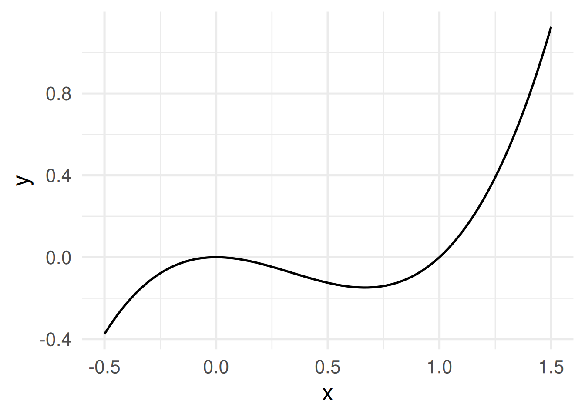
6.2 Some functions \(f: \mathbb{R} \to \mathbb{R}\)
\(f(x) = x\) identity function
\(f(x) = x^2\) square function
\(f(x) = \sqrt{x}\) square root function
\(f(x) = e^x\) exponential function
\(f(x) = \log(x)\) natural logarithm
- Square and square root function are inverse of each other. Exponential and natural logarithm, too.
\(\sqrt[2]{x}^2 = \sqrt[2]{x^2} = x\), \(\log(e^x) = e^{\log(x)} = x\)
- Identity function graph as mirror axis.
Code
ggplot() +
geom_function(fun = function(x) x) +
geom_function(fun = function(x) exp(x), color = "red") +
geom_function(fun = function(x) log(x), color = "green") +
geom_function(fun = function(x) x^2, color = "orange") +
geom_function(fun = function(x) sqrt(x), color = "blue") +
coord_fixed() +
xlim(c(-3, 3)) +
ylim(c(-3, 3)) +
xlab("x") +
theme_minimal(base_size = 20)Warning in log(x): NaNs producedWarning in sqrt(x): NaNs producedWarning: Removed 32 rows containing missing values or values outside the scale range
(`geom_function()`).Warning: Removed 50 rows containing missing values or values outside the scale range
(`geom_function()`).Warning: Removed 44 rows containing missing values or values outside the scale range
(`geom_function()`).Warning: Removed 50 rows containing missing values or values outside the scale range
(`geom_function()`).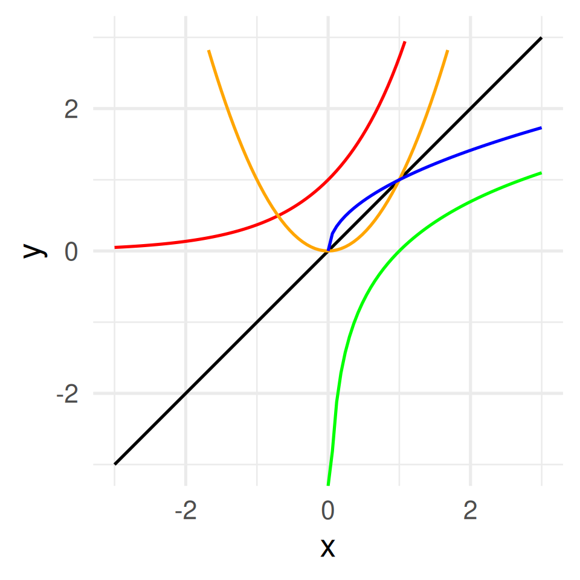
\(e\) is Euler’s number \(2.71828\dots\). The natural logarithm is also often called \(\ln\). The square root function is \(\mathbb{R}_{\geq 0} \to \mathbb{R}\), the logarithm \(\mathbb{R}_{>0} \to \mathbb{R}\).
6.3 Shifts and scales
How can we shift, stretch, or shrink a graph vertically and horizontally?
. . .
Add a constant to the function.
\(f(x) = x^3 - x^2 \leadsto\)
\(\quad f(x) = x^3 - x^2 + a\)
For \(a =\) -2, -0.5, 0.5, 2
Code
a = c(1, 0.5, 2, -0.5, -2)
ggplot() +
geom_function(fun = function(x) x^3 - x^2, size = 2, alpha = 0.5) +
geom_function(fun = function(x) x^3 - x^2 + a[2], color = "blue4", size = 2) +
geom_function(fun = function(x) x^3 - x^2 + a[3], color = "blue", size = 2) +
geom_function(fun = function(x) x^3 - x^2 + a[4], color = "red4") +
geom_function(fun = function(x) x^3 - x^2 + a[5], color = "red") +
coord_fixed() +
xlim(c(-3, 3)) +
ylim(c(-3, 3)) +
xlab("x") +
theme_minimal(base_size = 24)Warning: Using `size` aesthetic for lines was deprecated in ggplot2 3.4.0.
ℹ Please use `linewidth` instead.Warning: Removed 50 rows containing missing values or values outside the scale range
(`geom_function()`).Warning: Removed 51 rows containing missing values or values outside the scale range
(`geom_function()`).Warning: Removed 53 rows containing missing values or values outside the scale range
(`geom_function()`).Warning: Removed 50 rows containing missing values or values outside the scale range
(`geom_function()`).Warning: Removed 53 rows containing missing values or values outside the scale range
(`geom_function()`).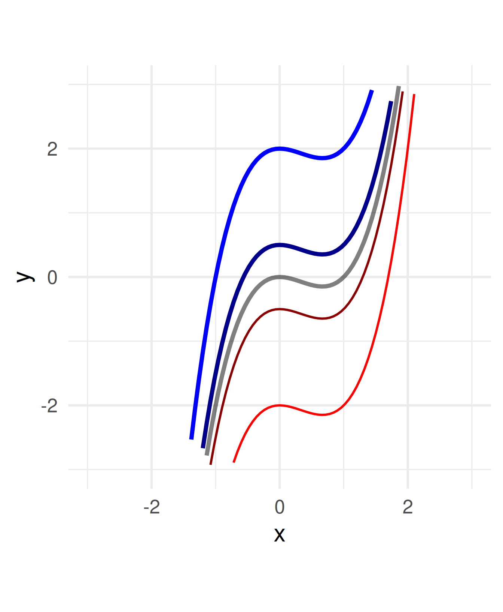
Subtract a constant from all \(x\) within the function definition.
\(f(x) = x^3 - x^2 \leadsto\)
\(\quad f(x) = (x - a)^3 - (x - a)^2\)
For \(a =\) -2, -0.5, 0.5, 2
Attention:
Shifting \(a\) units to the right needs subtracting \(a\)!
You can think of the coordinate system being shifted in direction \(a\) while the graph stays.
Code
a = c(1, 0.5, 2, -0.5, -2)
ggplot() +
geom_function(fun = function(x) x^3 - x^2, size = 2, alpha = 0.5) +
geom_function(
fun = function(x) (x - a[2])^3 - (x - a[2])^2,
color = "blue4",
size = 2
) +
geom_function(
fun = function(x) (x - a[3])^3 - (x - a[3])^2,
color = "blue",
size = 2
) +
geom_function(fun = function(x) (x - a[4])^3 - (x - a[4])^2, color = "red4") +
geom_function(fun = function(x) (x - a[5])^3 - (x - a[5])^2, color = "red") +
coord_fixed() +
xlim(c(-3, 3)) +
ylim(c(-3, 3)) +
xlab("x") +
theme_minimal(base_size = 24)Warning: Removed 50 rows containing missing values or values outside the scale range
(`geom_function()`).
Removed 50 rows containing missing values or values outside the scale range
(`geom_function()`).Warning: Removed 64 rows containing missing values or values outside the scale range
(`geom_function()`).Warning: Removed 51 rows containing missing values or values outside the scale range
(`geom_function()`).Warning: Removed 53 rows containing missing values or values outside the scale range
(`geom_function()`).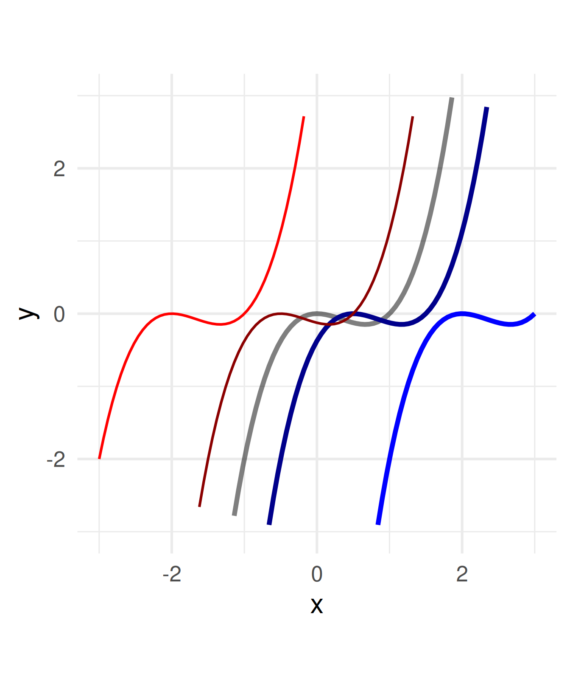
Multiply a constant to all \(x\) within the function definition.
\(f(x) = x^3 - x^2 \leadsto\)
\(\quad f(x) = a(x^3 - x^2)\)
For \(a =\) -2, -0.5, 0.5, 2
Negative numbers flip the graph around the \(x\)-axis.
Code
a = c(1, 0.5, 2, -0.5, -2)
ggplot() +
geom_function(fun = function(x) x^3 - x^2, size = 2, alpha = 0.5) +
geom_function(
fun = function(x) a[2] * ((x)^3 - (x)^2),
color = "blue4",
size = 2
) +
geom_function(
fun = function(x) a[3] * ((x)^3 - (x)^2),
color = "blue",
size = 2
) +
geom_function(fun = function(x) a[4] * ((x)^3 - (x)^2), color = "red4") +
geom_function(fun = function(x) a[5] * ((x)^3 - (x)^2), color = "red") +
coord_fixed() +
xlim(c(-3, 3)) +
ylim(c(-3, 3)) +
xlab("x") +
theme_minimal(base_size = 24)Warning: Removed 50 rows containing missing values or values outside the scale range
(`geom_function()`).Warning: Removed 39 rows containing missing values or values outside the scale range
(`geom_function()`).Warning: Removed 60 rows containing missing values or values outside the scale range
(`geom_function()`).Warning: Removed 39 rows containing missing values or values outside the scale range
(`geom_function()`).Warning: Removed 60 rows containing missing values or values outside the scale range
(`geom_function()`).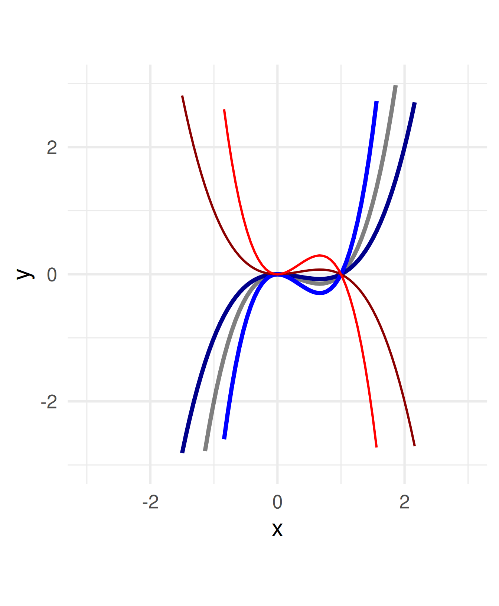
Divide all \(x\) within the function definition by a constant.
\(f(x) = x^3 - x^2 \leadsto\)
\(\quad f(x) = (x/a)^3 - (x/a)^2\)
For \(a =\) -2, -0.5, 0.5, 2
Negative numbers flip the graph around the \(y\)-axis.
Attention: Stretching needs a division by \(a\)!
You can think of the coordinate system being stretched multiplicatively by \(a\) while the graph stays.
Code
a = c(1, 0.5, 2, -0.5, -2)
ggplot() +
geom_function(fun = function(x) x^3 - x^2, size = 2, alpha = 0.5) +
geom_function(
fun = function(x) (x / a[2])^3 - (x / a[2])^2,
color = "blue4",
size = 2
) +
geom_function(
fun = function(x) (x / a[3])^3 - (x / a[3])^2,
color = "blue",
size = 2
) +
geom_function(fun = function(x) (x / a[4])^3 - (x / a[4])^2, color = "red4") +
geom_function(fun = function(x) (x / a[5])^3 - (x / a[5])^2, color = "red") +
coord_fixed() +
xlim(c(-3, 3)) +
ylim(c(-3, 3)) +
xlab("x") +
theme_minimal(base_size = 24)Warning: Removed 50 rows containing missing values or values outside the scale range
(`geom_function()`).Warning: Removed 76 rows containing missing values or values outside the scale range
(`geom_function()`).Warning: Removed 11 rows containing missing values or values outside the scale range
(`geom_function()`).Warning: Removed 76 rows containing missing values or values outside the scale range
(`geom_function()`).Warning: Removed 11 rows containing missing values or values outside the scale range
(`geom_function()`).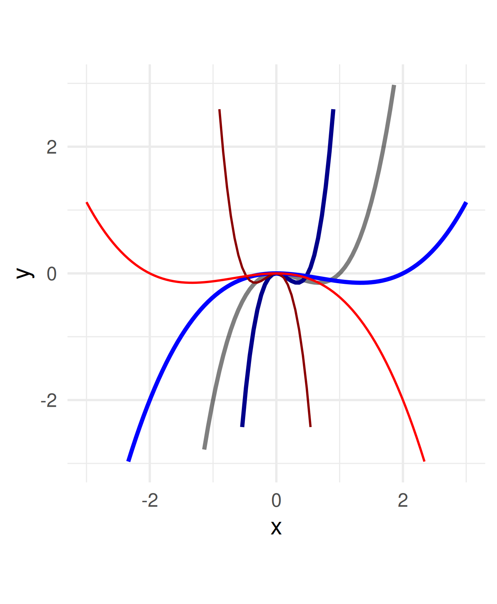
6.4 Math: Polynomials and exponentials
A polynomial is a function which is composed of (many) addends of the form \(ax^n\) for different values of \(a\) and \(n\).
In an exponential the \(x\) appears in the exponent. \(f(x) = x^2\) vs. \(f(x) = 2^x\)
Code
ggplot() +
geom_function(fun = function(x) x^2) +
geom_function(fun = function(x) 2^x - 1, color = "red") +
xlim(c(0, 1.5)) +
xlab("x") +
theme_minimal(base_size = 24)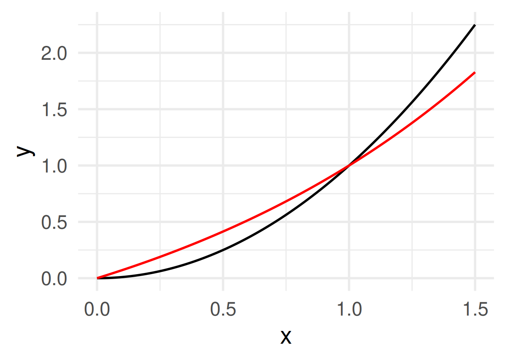
Note: We use \(f(x) = 2^x - 1\) to have both functions start at (0,0).
Same graph but for a larger range of \(x\):
Code
ggplot() +
geom_function(fun = function(x) x^2) +
geom_function(fun = function(x) 2^x - 1, color = "red") +
xlim(c(0, 5)) +
xlab("x") +
theme_minimal(base_size = 24)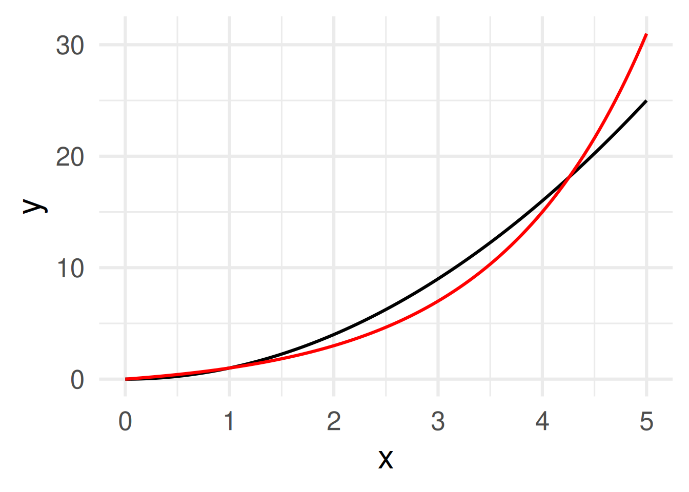
. . .
For \(x\to\infty\), any exponential will finally “overtake” any polynomial.
7 Functions in Programming and Programming Functions
7.1 Input \(\to\) output

- Metaphorically, a function is a machine or a blackbox that for each input yields an output.
- The inputs of a function are also called arguments.
. . .
Difference to math terminolgy:
The output need not be the same for the same input.
Picture from wikipedia.
7.2 Function as objects in R
function is a class of an object in R
class(c)[1] "function"class(ggplot2::ggplot)[1] "function"Calling the function without brackets writes its code or some information.
sd # This function is written in R, and we see its codefunction (x, na.rm = FALSE)
sqrt(var(if (is.vector(x) || is.factor(x)) x else as.double(x),
na.rm = na.rm))
<bytecode: 0x5c35946769a8>
<environment: namespace:stats>c # This function is not written in R but is a R primitivefunction (...) .Primitive("c")ggplot2::ggplot # This function is not written solely in Rfunction (data = NULL, mapping = aes(), ..., environment = parent.frame())
{
UseMethod("ggplot")
}
<bytecode: 0x5c358f7a8d20>
<environment: namespace:ggplot2>7.3 Define your own functions! (in R)
add_one <- function(x) {
x + 1
}
# Test it
add_one(10)[1] 11The skeleton for a function definition is
function_name <- function(input){
# do something with the input(s)
# return something as output
}function_nameshould be a short but evocative verb.- The
inputcan be empty or one or morenameorname=expressionterms as arguments. - The last evaluated expression is returned as output.
- When the body or the function is only one line
{}can be omitted. For example
add_one <- function(x) x + 1
7.4 Flexibility of inputs and outputs
- Arguments can be specified by
name=expressionor justexpression(then they are taken as the next argument) - Default values for arguments can be provided. Useful when an argument is a parameter.
mymult <- function(x = 2, y = 3) x * (y - 1)
mymult(3, 4)[1] 9mymult()[1] 4mymult(y = 3, x = 6)[1] 12mymult(5)[1] 10mymult(y = 2)[1] 2. . .
For complex output use a list
mymult <- function(x = 2, y = 3) {
list(out1 = x * (y - 1), out2 = x * (y - 2))
}
mymult()$out1
[1] 4
$out2
[1] 28 Think and program vectorized!
8.1 Vectorized functions
Mathematical functions in programming are often “vectorized”:
- Operations on a single value are applied to each component of the vector.
- Operations on two values are applied “component-wise” (for vectors of the same length)
log10(c(1, 10, 100, 1000, 10000))[1] 0 1 2 3 4c(1, 1, 2) + c(3, 1, 0)[1] 4 2 2(0:5)^2[1] 0 1 4 9 16 258.2 Recall: Vector creation functions
1:10 [1] 1 2 3 4 5 6 7 8 9 10seq(from = -0.5, to = 1.5, by = 0.1) [1] -0.5 -0.4 -0.3 -0.2 -0.1 0.0 0.1 0.2 0.3 0.4 0.5 0.6 0.7 0.8 0.9
[16] 1.0 1.1 1.2 1.3 1.4 1.5seq(from = 0, to = 1, length.out = 10) [1] 0.0000000 0.1111111 0.2222222 0.3333333 0.4444444 0.5555556 0.6666667
[8] 0.7777778 0.8888889 1.0000000rep(1:3, times = 3)[1] 1 2 3 1 2 3 1 2 3rep(1:3, each = 3)[1] 1 1 1 2 2 2 3 3 38.3 Plotting and transformation
Vector creation and vectorized functions are key for plotting and transformation.
func <- function(x) x^3 - x^2 # Create a vectorized function
data <- tibble(x = seq(-0.5, 1.5, by = 0.01)) |> # Vector creation
mutate(y = func(x)) # Vectorized transformation using the function
data |> ggplot(aes(x, y)) + geom_line() + theme_minimal(base_size = 20)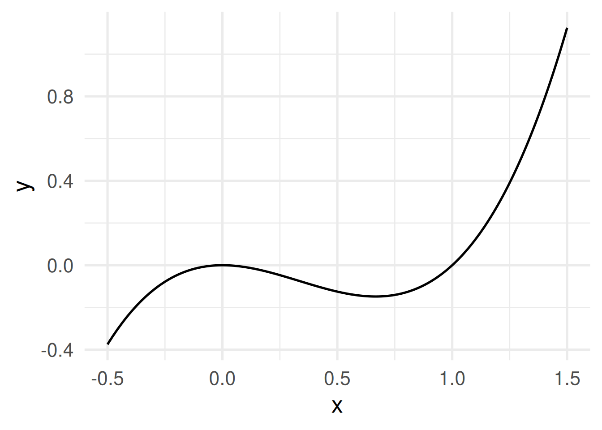
8.4 Conveniently ggploting functions
ggplot() +
geom_function(fun = log) +
geom_function(fun = function(x) 3 * x - 4, color = "red") +
theme_minimal(base_size = 20)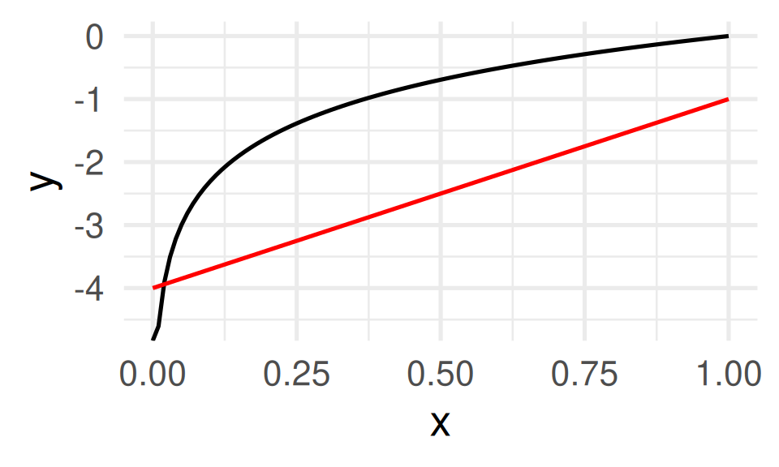
Code line 3 shows another important concept: anonymous functions. The function function(x) 3*x - 4 is defined on the fly without a name.
9 Conditional Statements (if) and Iteration (map)
9.1 Conditional statements
ifexecutes a code block if a condition isTRUEelseexecutes a code block if the condition isFALSE
Skeleton
if (condition) {
# code block
} else {
# code block
}Example: A piece-wise defined function
piecewise <- function(x) {
if (x < 2) {
0.5 * x
} else {
x - 1
}
}piecewise(1)[1] 0.5piecewise(2)[1] 1piecewise(3)[1] 2. . .
Problem: piecewise is not vectorized. piecewise(c(1,2,3)) does not work!
9.2 Vectorized operations with map
mapfunctions apply a function to each element of a vector.3map(.x, .f, ...)applies the function.fto each element of the vector of.xand returns a list.map_dblreturns a double vector (other variants exist)
map(c(1, 2, 3), piecewise)[[1]]
[1] 0.5
[[2]]
[1] 1
[[3]]
[1] 2map_dbl(c(1, 2, 3), piecewise)[1] 0.5 1.0 2.0piecewise_vectorized <-
function(x) map_dbl(x, piecewise)piecewise_vectorized(seq(0, 3, by = 0.5))[1] 0.00 0.25 0.50 0.75 1.00 1.50 2.00tibble(x = seq(0, 3, by = 0.5)) |>
mutate(y = piecewise_vectorized(x)) |>
ggplot(aes(x, y)) +
geom_line() +
theme_minimal(base_size = 20)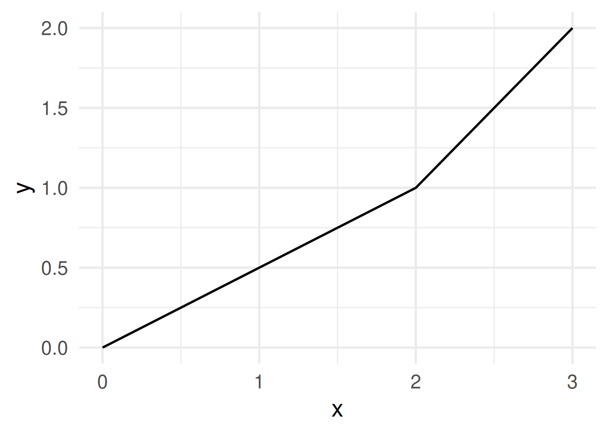
9.3 reduce
Instead of a list or a vector reduce returns a single value.
To that end it needs a function with two arguments. It applies it to the first two elements of the vector, then to the result and the third element, then the result and the fourth element, and so on.
1:10 |> reduce(\(x, y) x + y)[1] 55Note: \(x) is a short way to write an anonymous function as function(x).
. . .
Example: Reading multiple files
Instead of
a <-read_csv("a.csv")
b <-read_csv("b.csv")
c <-read_csv("c.csv")
d <-read_csv("d.csv")
e <-read_csv("e.csv")
f <-read_csv("f.csv")
g <-read_csv("g.csv")
bind_rows(a,b,c,d,e,f,g)Write
letter[1:7] |>
map(\(x) read_csv(paste0(x,".csv"))) |>
reduce(bind_rows)9.4 map and reduce
mapapplies a function to each element of a vector (or list) and returns a list (or vector ifmap_dblor other vaeriants are used)- The output has the same
lengthas the input
- The output has the same
reduceapplies a function taking two arguments and then summarizes the list by applying them two element 1 and 2 and then again the result with element 3 and then the result with element 4, …- The output is one object
- Remark: The problem of vectorizing a function which has an
ifandelsestatement (see the examplepiecewise_vectorized) can also be solved using the vectorized version of it:
if_else(condition = *condition*, true = *value-if_TRUE*, false = *value-if_FALSE*)
Here every argument can be a vector!
9.5 Function programming: Take away
- Functions are the most important building blocks of programming.
- Functions can and often should be vectorized.
- Vectorized functions are the basis for plotting and transformation.
mapfunctions are powerful tools for iterative tasks!
Expect to not get the idea first but to love them later.
Footnotes
The notion join comes from SQL database. In other data manipulation frameworks joining is called merging.↩︎
Watch: How to read math https://www.youtube.com/watch?v=Kp2bYWRQylk↩︎
In
tidyversethey are provided in the packagepurrr↩︎